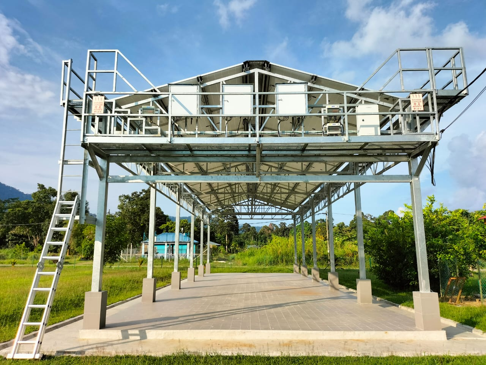

Power House – Genset & Panel Kawalan
Struktur bangunan yang menempatkan genset, panel kawalan MCC dan sistem sokongan bagi operasi solar hibrid di kawasan pedalaman.
Ruang untuk gambar:
Bilik bateri / bank bateri Li-ion atau Lead-Acid
lengkap dengan pemasangan rak & perlindungan.
Bilik bateri & sistem simpanan tenaga
Menunjukkan konfigurasi bank bateri, kemasan kabel, laluan udara dan aspek keselamatan di tapak.
Ruang untuk gambar:
Genset & papan suis utama (MCC)
yang disepadukan dengan sistem solar hibrid.
Genset & panel kawalan
Integrasi antara genset dan sistem solar hibrid untuk memastikan bekalan berterusan ketika cuaca
tidak mengizinkan.
Ruang untuk gambar:
Murid & guru menggunakan kemudahan di sekolah
selepas ada elektrik yang lebih stabil.
Komuniti & pengguna akhir
Momen yang menggambarkan impak sebenar projek – pelajar dan guru mendapat manfaat akses tenaga
yang lebih boleh diharap.
Ruang untuk gambar:
Perjalanan ke tapak – sungai, laluan balak,
bot panjang, 4x4 dan sebagainya.
Perjalanan ke tapak projek
Visual yang menceritakan cabaran logistik dan komitmen pasukan untuk sampai ke lokasi terpencil.
Ruang untuk gambar:
EV charger, dashboard monitoring,
atau BESS di bangunan kerajaan.
Teknologi sokongan lain
Contoh pemasangan EVCS, BESS atau sistem pemantauan yang berkaitan dengan inisiatif tenaga hijau.